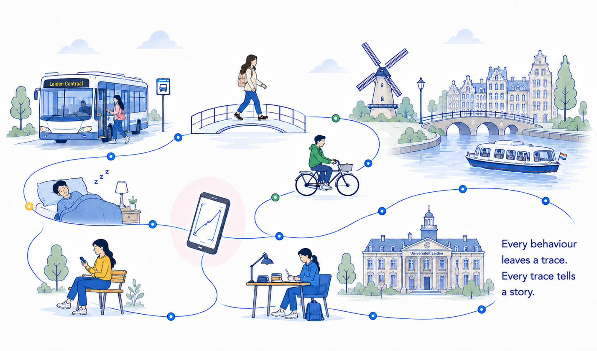

In 1633 Leiden University opened an observatory to study the stars. The work done there helped change how we understand the universe.
Now, an observatory for human behaviour
We observe people in everyday life through the touches on their phones. From these traces we are building a new understanding of behaviour, one that fuels curiosity and helps improve lives.
Scroll to explore